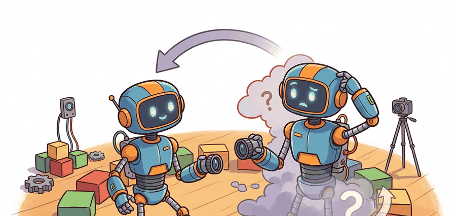

The best predictive target is the one the controller would pay to know one step earlier.
A Horizon-Aware Predictor

This section assumes familiarity with latent-state representations introduced in section 36.1 and with the coordinate-frame conventions from section 4.2. The prediction-target trade-offs developed here feed directly into the latent world-model architectures of sections 38.3 and 38.5, where the choice between state and observation targets shapes the entire planning loop.
A robot reaches for a glass and its fingers slip. Why? Its world model predicted the wrong next state, because it was predicting raw pixels instead of the contact force and surface-normal that actually drive the grasp decision. The choice of what a forward model predicts, joint angles versus camera frames versus abstract latent codes, is now the central design variable separating reactive reflexes from genuine planning. Here you will map the prediction-target landscape, understand when state-space models give controllers early access to the information they need, and learn when raw-observation targets earn their computational cost by preserving structure no hand-crafted state vector can capture.
Prediction targets are engineering choices, not aesthetics. The right target is the one that gives the controller earlier access to the variable that changes its decision.
Prediction Targets And Control Interfaces
A forward model can predict physical state, latent state, observation, reward, contact flags, or some mixture of them. A common latent-state factorization is
$$ z_{t+1} = f_\theta(z_t, a_t), \qquad \hat o_{t+1} = g_\phi(z_{t+1}). $$
If the planner reasons directly in latent space, the decoder is optional at decision time. If the planner needs image-space occupancy, object masks, or human-interpretable diagnostics, the decoder becomes operationally important rather than decorative.
This factorization matters for physical robots because the latent $z$ can be compact enough to roll out hundreds of steps within a real-time control budget, while still encoding the contact forces, velocity, and object geometry that drive decisions. A raw-pixel forward pass at every planning step exceeds the compute budget of most onboard processors; separating the dynamics from the decoder lets the planner run fast while the decoder is reserved for human inspection or vision-based modules that genuinely need rendered frames.
Training works by minimizing a combined loss: a reconstruction term pushes $g_\phi(z_{t+1})$ close to the observed $o_{t+1}$, and a consistency term keeps consecutive latents on a smooth trajectory under action $a_t$. The reconstruction signal shapes the latent so it encodes scene content; the dynamics term shapes $f_\theta$ so predictions stay accurate across multi-step rollouts. Neither signal alone is sufficient because a reconstruction loss without dynamics produces a good encoder but a useless predictor, while a dynamics loss without reconstruction can collapse the latent to a trivial constant.
Think of baking bread: the hydration ratio (reconstruction signal) determines whether the crumb is open and chewy, but without the proofing schedule (dynamics signal) the dough never develops the gluten strands that hold the structure in place over time. You need both together. Optimize only hydration and you get a flat, wet mass that looks like dough but collapses; optimize only proofing time on a dry dough and you get a well-structured loaf with no flavor or moisture. The reconstruction loss shapes what the latent encodes at any single moment, while the dynamics loss shapes how that encoding evolves from one step to the next. Removing either term breaks the model in a different but equally decisive way.
| Target | Strength | Risk |
|---|---|---|
| Physical state or delta state | Cheap rollout, clean constraints, easy cost design | Misses hidden scene factors if the state is underspecified |
| Latent state | Compresses perception and control into one interface | Harder to debug when the latent drops task-relevant detail |
| Pixel or depth observation | Keeps scene detail for occlusion and contact reasoning | High compute cost, easy to optimize the wrong visual details |
Real systems illustrate these trade-offs concretely. PlaNet (Hafner et al., 2019) and DreamerV3 plan entirely in latent state: the decoder is trained as an auxiliary signal to shape the latent, then discarded at decision time, keeping rollout cost low. This is what is called predict in latent, discard the decoder: a 512-step planning rollout that reconstructs pixels at every step can take 4 to 8 seconds on a mid-range GPU (as measured on an NVIDIA V100 in 2023), while the same rollout over the latent alone completes in under 400 milliseconds, a 10x wall-clock gap with no loss in control quality. By contrast, Transporter Networks (Zeng et al., 2021) keep prediction in image space because the spatial layout of objects directly encodes which grasp is feasible and a compact state vector would lose that structure. TD-MPC2 (Hansen et al., 2023) takes a middle path: it predicts a learned latent but adds a reward predictor head so the planner can estimate value without reconstructing pixels at all.
In DreamerV3 and TD-MPC2, the decoder is instantiated as part of the model class and will run on every forward pass unless you explicitly set it to eval mode and wrap planning calls with torch.no_grad() while skipping the decoder branch. The clearest way to enforce this is to gate the decode call behind a boolean flag (e.g., decode=False) rather than relying on requires_grad alone, which suppresses gradient flow but not the forward computation. Skipping the decode step during a 512-step MPPI (Model Predictive Path Integral, a sampling-based planner covered in Section 37.3) rollout typically cuts wall-clock planning time by 30 to 50 percent on a single GPU without any loss in control quality.
Worked Probe
The code below contrasts a latent-state predictor with an observation predictor on a toy pushing task. The latent model predicts object position directly; the observation model predicts a rendered pixel coordinate and then recovers position from it.
# Compare a direct state predictor with an observation-space predictor.
# The state model predicts object position; the observation model predicts
# a pixel coordinate that must be converted back into world space.
from math import fabs
x_t = 0.40
action = 0.12
true_next = x_t + action
state_pred = x_t + 0.95 * action
pixel_scale = 320.0
predicted_pixel = pixel_scale * (x_t + 0.90 * action) + 2.0
obs_pred = predicted_pixel / pixel_scale
print(
{
"true_next": round(true_next, 3),
"state_pred": round(state_pred, 3),
"obs_pred": round(obs_pred, 3),
"state_abs_error": round(fabs(true_next - state_pred), 4),
"obs_abs_error": round(fabs(true_next - obs_pred), 4),
}
){'true_next': 0.52, 'state_pred': 0.514, 'obs_pred': 0.519, 'state_abs_error': 0.006, 'obs_abs_error': 0.001}
Read the two absolute errors as a comparison of prediction targets: the state predictor is slightly less accurate here, but it requires no decode step. The observation route recovers extra precision only after converting back through a pixel scale, adding a computation the controller must pay on every step. The useful question is whether that precision gain actually changes a control decision, not merely which number is smaller.
Use PyTorch or JAX for the predictors, Gymnasium for the transition contract, and MuJoCo when the state variable should include contact, velocity, or actuator dynamics rather than only kinematic position.
Predict the smallest variable that preserves the control objective. Add a decoder only when humans, downstream modules, or the planner itself genuinely need observation-space detail.
Students often assume that a forward model must predict the next raw observation, because observations are what sensors actually return. In embodied AI this is wrong: a forward model is any function that maps the current state and action to the next state, and that state need not be an observation at all. Predicting a compact latent vector $z_{t+1}$ is a fully valid forward model even when no pixel is ever reconstructed. The correct mental model is that the dynamics function $f_\theta(z_t, a_t)$ and the decoder $g_\phi(z_{t+1})$ are separate components with separate purposes; planning lives in the dynamics, and the decoder is an optional tool for modules that genuinely require sensor-space output.
A decoder with beautiful frames can hide a useless latent. If the planner acts on latent state, audit value error, cost error, and constraint violation, not only image quality.
State prediction fails silently when the chosen state vector is underspecified. A joint-angle predictor for a manipulation task that ignores object position will accumulate large errors the moment the robot makes contact, because the contact force depends on the object, not just the arm. The model will appear accurate on free-motion rollouts and then collapse exactly when the controller needs it most. Always verify that every variable the cost function reads is either in the state vector or derivable from it without ambiguity.
A drone dodging cables in clutter may need pixel-space or depth-space prediction because the obstacle geometry matters directly. A torque-limited arm tracking a known part usually benefits more from joint-state and contact prediction than from reconstructing the entire camera view.
This section connects prediction targets to the representation choices in Chapter 28, the camera-frame geometry in Chapter 4, and the latent world-model machinery in Chapter 38.
Tokenized world models for long-horizon prediction. Transformer-based world models that represent future states as discrete token sequences are scaling to much longer horizons than recurrent latent models. DIAMOND (Alonso et al., 2024, ICLR 2025 Outstanding Paper) trains a diffusion-based world model entirely in token space and achieves near-human Atari scores while predicting 100-step futures with coherent object permanence, a regime where RNN (Recurrent Neural Network) latent models degrade sharply.
Multimodal prediction targets combining proprioception and vision. Rather than choosing between state and observation prediction, 2024 work couples multiple prediction heads that share a single latent backbone. Uni-Pi (Du et al., 2024) and similar video-language-action models learn a joint latent that simultaneously predicts low-dimensional end-effector state and a compact video token stream, allowing the planner to query whichever head is cheaper at each step while keeping both signals as regularizers during training.
Uncertainty-aware dynamics for safe deployment. Ensemble and conformal approaches that attach calibrated uncertainty sets to each predicted next state are moving from tabletop simulation to real hardware. SWIM (Zhan et al., 2025) wraps a latent dynamics model with conformal prediction intervals, letting a safety filter veto plans whose predicted state trajectory leaves the certified region, demonstrated on a Spot robot navigating unstructured terrain.
Open problem for PhD students. All three directions above require the prediction target to remain stable under distribution shift between training data and deployment. When the robot encounters a novel object or an unseen contact mode, the latent encoder silently maps it to the nearest familiar region, producing confident but wrong predictions. No current method detects this encoder-level novelty in real time without a separate held-out dataset. A tractable open problem is designing an online test for latent-space novelty that triggers replanning or data collection before the prediction error compounds across a multi-step rollout, using only information available on the robot at deployment time.
Name one task where observation prediction is necessary and one where it is wasteful. What information does the controller need in each case, and how would you prove that your chosen target supplies it?
State prediction tells the robot where the world is going. Observation prediction tells it what the sensors will look like when the world gets there.
Prediction targets should be chosen by control relevance, not by visual appeal. The cleanest target is the one that best supports the next decision under the real system budget.
Pick one robot task and specify a state-space predictor and an observation-space predictor for it. Write the exact metric that would tell you which target is more useful for action.
Project Ideas
Beginner (weekend): Build a one-step latent-state predictor for a cart-pole task in Gymnasium using a small MLP (Multilayer Perceptron) trained on (observation, action) pairs to predict the next observation vector; the key challenge is choosing a loss that punishes errors on the pole angle more than on cart position, since only the angle drives the terminal condition. Intermediate (1-2 weeks): Implement a multi-step forward model in MuJoCo's Ant-v4 environment using PyTorch, with one head predicting joint-angle state and a second head predicting a rendered depth frame, then compare 10-step rollout accuracy and wall-clock planning cost at each horizon to see exactly where the observation head starts hurting throughput. Intermediate (1-2 weeks): Wire a learned latent dynamics model into a LeRobot pipeline for a tabletop push task, train the encoder jointly with a reconstruction loss and a one-step consistency loss as described in this section, then ablate each loss term to confirm that removing either one degrades multi-step prediction accuracy on held-out trajectories.
Bibliography & Further Reading
Primary References And Tools
Hafner, D. et al.. "Learning Latent Dynamics for Planning from Pixels." (2019). https://arxiv.org/abs/1811.04551
PlaNet is the classic argument for planning in latent state rather than pixel space.
Hafner, D. et al.. "Mastering Diverse Domains through World Models." (2023). https://arxiv.org/abs/2301.04104
DreamerV3 is a strong modern example of latent predictive learning tied to behavior.
MuDreamer authors. "MuDreamer: Learning Predictive World Models without Reconstruction." (2024). https://arxiv.org/html/2405.15083v1
A useful recent example of reducing or removing full reconstruction when task relevance matters more.